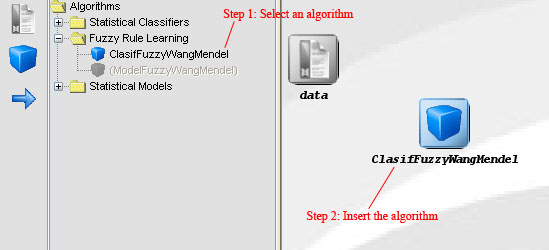

In order to add an algorithm to our experiment, we must perform the
following actions:
- Select the desired option from the tool bar on the left, according to the type of algorithm we want to insert:
pre-process, method, post-process or test.
- Choose the desired algorithm from the tree structure.
- Click on the draw area.
